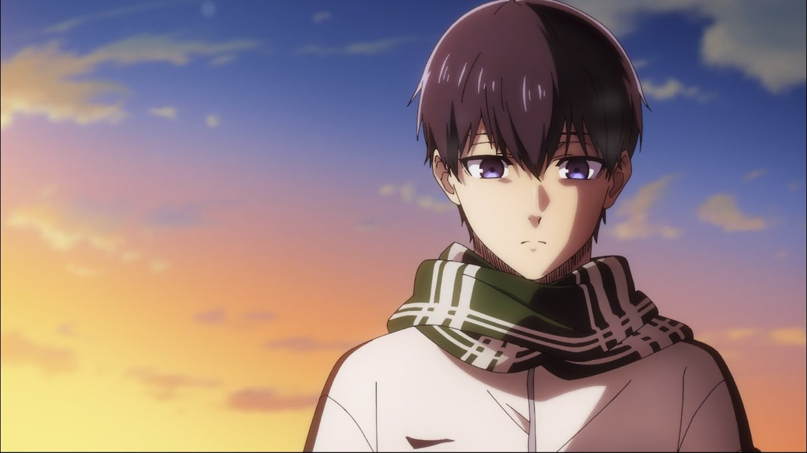
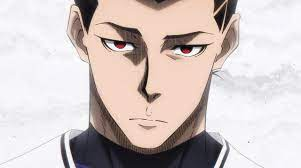
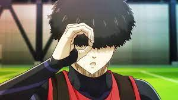

|  |
In the prefectural tournament finals with his team trailing 1-0, striker Yoichi Isagi,
heeding the words from his coach about soccer being a team game, opts to pass the ball
to his wide open teammate rather than shooting at the goal himself, and his teammate
misses. The opponent takes the ball the other way with their captain Ryosuke Kira
kicking the match-clinching goal to advance to the national tournament. Sometime later,
Isagi is summoned to the Japan Football Union, and he finds himself being one of 300
strikers confined at a remote soccer training facility called Blue Lock directed by
coach Jinpachi Ego, being put through a survival boot camp in order to develop the
ultimate striker for the Japan national football team with the winner becoming the
team's starting striker and the rest banned from playing for the national team. The
first trial is a game of tag in which the person who is struck by a kicked ball is 'it',
and whoever is 'it' when time expires is eliminated. The lowest-ranked striker Gurimu
Igarashi starts out being 'it', and Isagi ends up being tagged to become 'it'. Rather
than choosing to eliminate Igarashi while he is down, Isagi takes the risk to eliminate
a stronger player, and just before time expires he tags Kira to eliminate him.
|
|  |
In the prefectural tournament finals with his team trailing 1-0, striker Yoichi Isagi,
heeding the words from his coach about soccer being a team game, opts to pass the ball
to his wide open teammate rather than shooting at the goal himself, and his teammate
misses. The opponent takes the ball the other way with their captain Ryosuke Kira
kicking the match-clinching goal to advance to the national tournament. Sometime later,
Isagi is summoned to the Japan Football Union, and he finds himself being one of 300
strikers confined at a remote soccer training facility called Blue Lock directed by
coach Jinpachi Ego, being put through a survival boot camp in order to develop the
ultimate striker for the Japan national football team with the winner becoming the
team's starting striker and the rest banned from playing for the national team. The
first trial is a game of tag in which the person who is struck by a kicked ball is 'it',
and whoever is 'it' when time expires is eliminated. The lowest-ranked striker Gurimu
Igarashi starts out being 'it', and Isagi ends up being tagged to become 'it'. Rather
than choosing to eliminate Igarashi while he is down, Isagi takes the risk to eliminate
a stronger player, and just before time expires he tags Kira to eliminate him.
|
|
With Isagi struggling mentally, he asks Kumigami why he plays soccer, responding that he
idolizes strikers as real-life superheroes and wants to become on. Kumigami also
explains that goal scorers get bonus points to spend for stuff to improve quality of
life at Blue Lock, and Kumigami uses his for a steak he shares with Isagi as gratitude
for the assist. Kumigami also tells Isagi that he has a special talent for sensing where
to go with the ball to score goals. The next day, Team Z and Team Y play a match that
amounts to an elimination game with both teams losing badly in their first match. Team Z
puts their position rotation strategy into motion with Bachira starting out as the
striker, but Bachira struggles as his shots get blocked. Team Y then puts their plan
into motion to focus on defense, then steal the ball and following a long pass to the
team's best player Hibiki Ohkawa, he scores on a breakaway to give Team Y a 1-0 lead.
Having taken the lead, Team Y deploys stall tactics by passing the ball around to run
out the clock, but Team Z steals possession and ties the match with a goal from Gin
Gagamaru, all while Isagi notices that Ohkawa's teammate Ikki Niko is the team's true
leader who is calling the shots.
|
 |

|